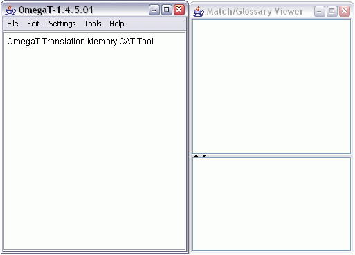

OmegaT: Instant Start v0.2
This instant start guide covers only the very basics. Ideally, all users should read the OmegaT User Manual to familiarise themselves with everything OmegaT has to offer.
- Briefly, how OmegaT works
- How to translate using OmegaT
- Dealing with tagged text
Briefly, how OmegaT works
When OmegaT starts, it will look similar to this picture:

OmegaT consists of two windows, which you can independently move around on your screen. The left-hand window is the edit window where you will type your translation. The right-hand window is the Match/Glossary Viewer, where fuzzy matches (top frame) and glossary matches (bottom frame) will be displayed.
OmegaT extracts segments from the source document, displays them in the edit screen for you to translate, and adds your translations to a translation memory. After the translation is done (or at any time requested by you), OmegaT creates a target document by rebuilding the source document using the segments from the translation memory.
OmegaT organises your translation work into so-called translation projects. For each project, OmegaT first creates a set of folders which will contain the source documents, the glossaries and translation memories, and eventually also the target documents.
How to translate using OmegaT
1. Create a new project
Select File -> New Project... from the menu.
Navigate to the folder where you'd like to save the project files, and type in a name for the translation project. This name will also be the name of the project folder, and all project files will be stored in that folder.
OmegaT will prompt you to change or accept the project folders to be created. It will look similar to this picture:

You may simply accept the location of the subfolders (directories), but you should make sure that source and target language codes are correct (you can find a list of commonly used language codes in the OmegaT User Manual). Make a mental note of the location of the "Source files directory".
Then click OK to accept the project setup.
Now copy your source documents into the "source" folder of the translation project. Remember, OmegaT can only translate OpenDocument files, OpenOffice.org documents, HTML, plaintext and certain Java files. If you copy any other files into the "source" folder, OmegaT will ignore them.
2. Open the new project
Select File -> Open Project... from the menu.
Select the existing translation project, which may have an OmegaT icon, and click "Open". Then select the file called omegat.project, and click "Open" again.
OmegaT will prompt you to select a source file in the project. OmegaT loads the first file on the list by default. Select a file, and click "Close" to close the window.
3. Translate the segments one by one
For the current segment, OmegaT highlights the source text in green and displays a copy of the source text between two tags <segment 0001> and <end segment>. Type your translation between the two tags by overwriting the text.
Press "ENTER" to advance to the next segment.
When you press "ENTER", several things happen invisibly: OmegaT adds the translated segment to the translation memory, and OmegaT searches the translation memory and glossary for matches for the untranslated segment.
If the next segment has a fuzzy match from the translation memory, it would be displayed in the top frame of the Match/Glossary Viewer. If that segment matched any terms in the glossary, it would be displayed in the bottom frame of the Match/Glossary Viewer.
If there is a fuzzy match, you can insert the fuzzy match text into the edit window as follows:
- Select the correct fuzzy match using Ctrl+1, Ctrl+2 etc.
- Press Ctrl+I to insert it at the cursor's current position, or...
- Press Ctrl+R to overwrite the entire current segment by it.
Whenever there is a 100% match, OmegaT will automatically overwrite the entire current segment with it. Keep in mind that 100% matches are propagated throughout the entire project -- or to put it simply, if you change the text of a 100% match, OmegaT will automatically update all occurences of that segment with the new text.
4. Build the target documents
After the translation is done (or at any time requested by you), OmegaT creates a target document by rebuilding the source document using the segments from the translation memory.
To create the target documents, select File -> Create Target Documents from the menu. OmegaT will build target versions of all valid documents in the "source" directory, regardless of how much of it is translated.
You can check at any time what the target document currently looks like by simply invoking Create Target Documents. You can alter existing translations in your translation project and then recreate the target documents as often as you like. It is recommended that you save your translation memory regularly and that you build your target documents regularly
The translated files can now be found in the "target directory".
Dealing with tagged text
In OpenDocument files, OpenOffice.org documents or HTML files, certain words within a sentence often have special formatting of their own. For example, a sentence may be in italic font but a word in the middle of the sentence might be in bold font.
OmegaT marks up these format changes using special tags, which you must transfer to the translated version of the text. See the OmegaT User Manual for advanced tag editing.
An example...
Here is an example of a segment in HTML:
<p>A different display font can be selected via the <b>Display Font</b> dialog. Open it via the <i>Settings</i> > <i>Display Font...</i> menu item. The font type and size can be changed from the dialog.</p>
Here is how OmegaT will display it, highlighted in green:
A different display font can be selected via the <b0>Display Font</b0> dialog. Open it via the <i0>Settings</i0> > <i1>Display Font...</i1> menu item. The font type and size can be changed from the dialog.
And here is how you would translate it (this example is in Afrikaans):
'n Mens kan 'n ander vertoonfont kies met die <b0>Vertoonfont</b0>-dialoogkassie. Kies <i0>Opstelling</i0> > <i1>Vertoonfont...</i1> op die kieslys. Die lettertipe én die lettergrootte kan met dié dialoogkassie verander word.
When OmegaT creates the target document, the HTML will look like this:
<p>'n Mens kan 'n ander vertoonfont kies met die <b>Vertoonfont</b>-dialoogkassie. Kies <i>Opstelling</i> > <i>Vertoonfont...</i> op die kieslys. Die lettertipe én die lettergrootte kan met dié dialoogkassie verander word.</p>
OmegaT doesn't automatically detect mistakes in a tagged translation. Before you deliver the target document to your client, you should check your tags for errors, by selecting Tools -> Validate Tags from the menu. Ideally you should open the document in its associated viewer or editor to double-check the formatting.
Copyright (c) 2005 Samuel Murray